Кабели USB
Кабели USB доступны в нескольких различных конфигурациях.
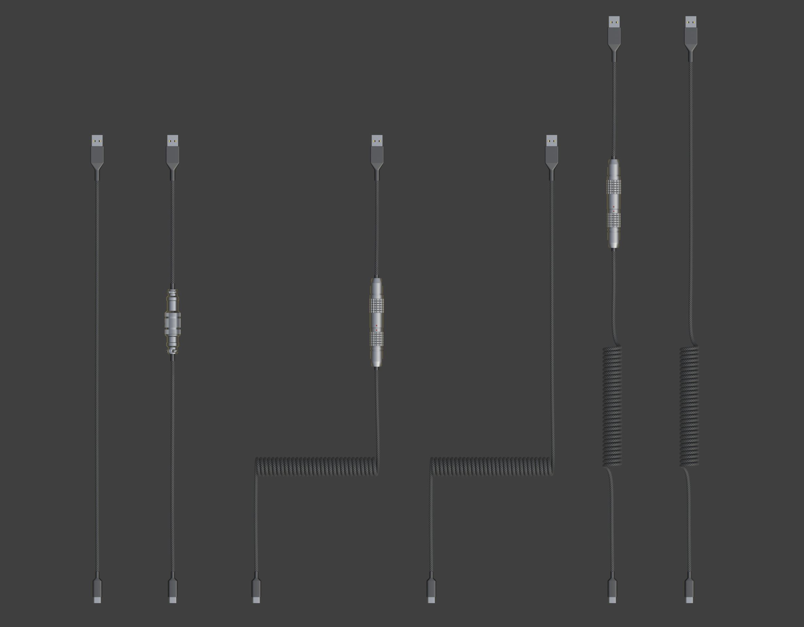
С помощью манипулятора придайте кабелю нужную форму.
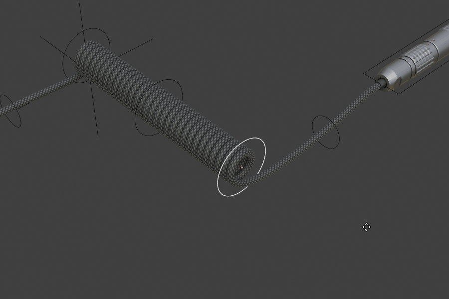
Разъём USB можно заменить на другой тип через данные объекта.
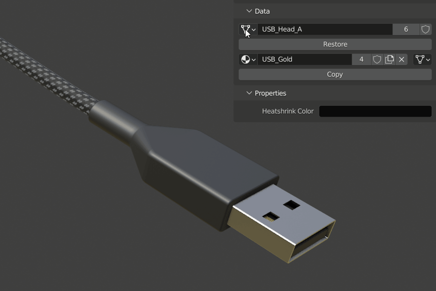
Разъёмы Aviator и LEMO взаимозаменяемы, а также отсоединяются.
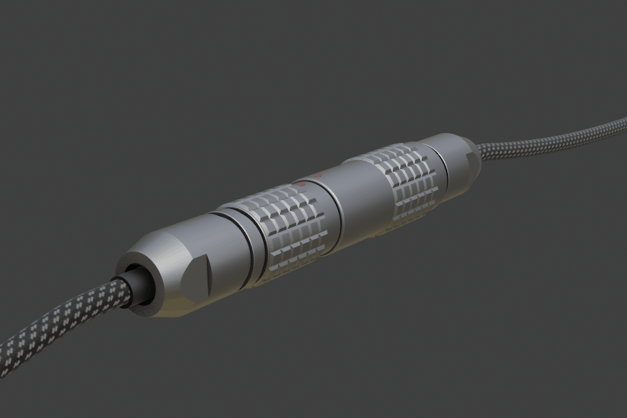
Настройки
Настройки разделены по объектам и по сегментам: каждый сегмент можно настроить отдельно.
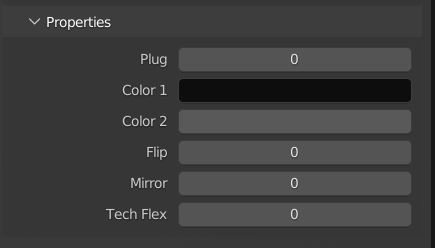
Plug (Соединение)
Эта настройка снова соединяет разъём LEMO или Aviator.
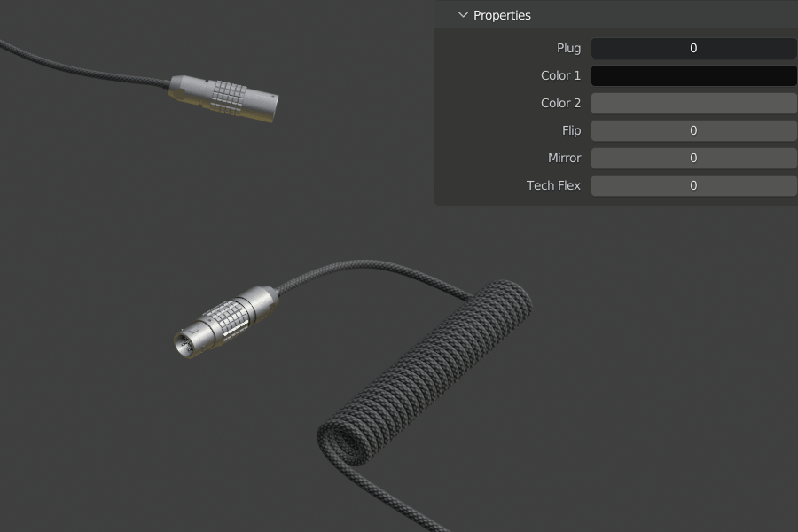
Color (Цвет)
Цвет 1 и Цвет 2 задают основной и акцентный цвет материала соответственно.
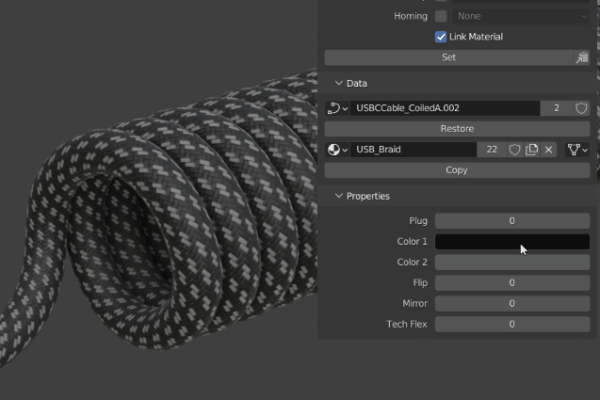
Flip (Переворот)
Эта настройка переворачивает витую часть кабеля сверху вниз.
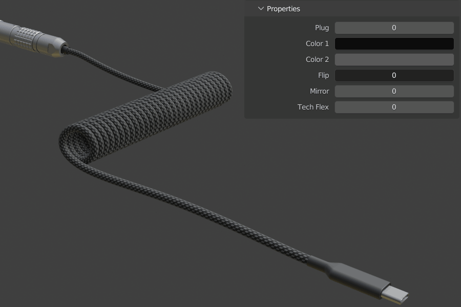
Mirror (Зеркало)
Эта настройка зеркалит кабель по горизонтали.
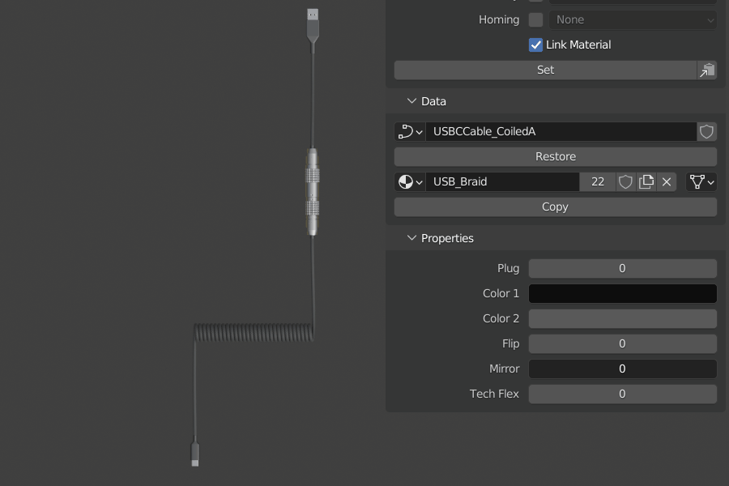
Tech Flex (Оплётка)
Эта настройка заменяет обычную оплётку кабеля на сетчатую оплётку Tech Flex.
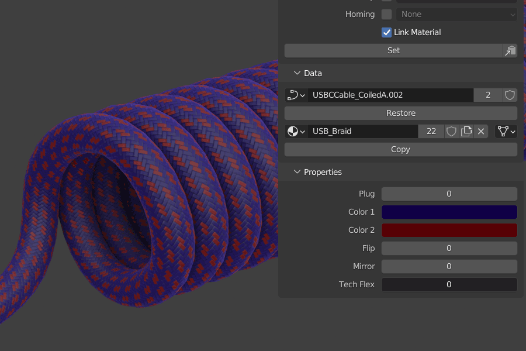
Прямой кабель
Обычный кабель USB — исключение: он спроектирован так, что его можно бесконечно удлинять, редактируя объект-кривую, подразделяя сегменты и добавляя вершины.
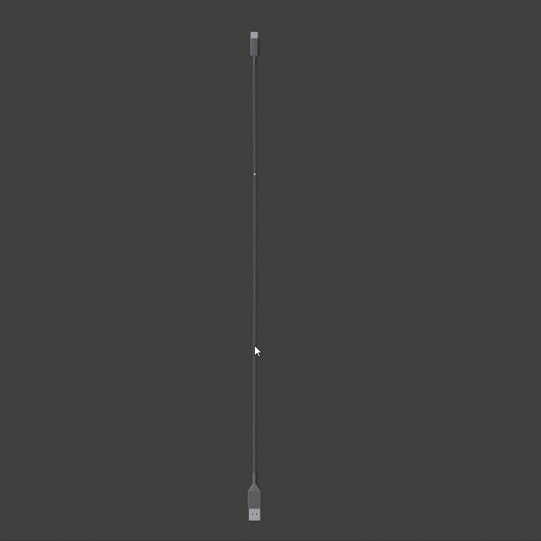
Материалы
Как и у коврика, для смены материала нужно отредактировать применённый материал либо заменить его через панель модификаторов в свойствах объекта.
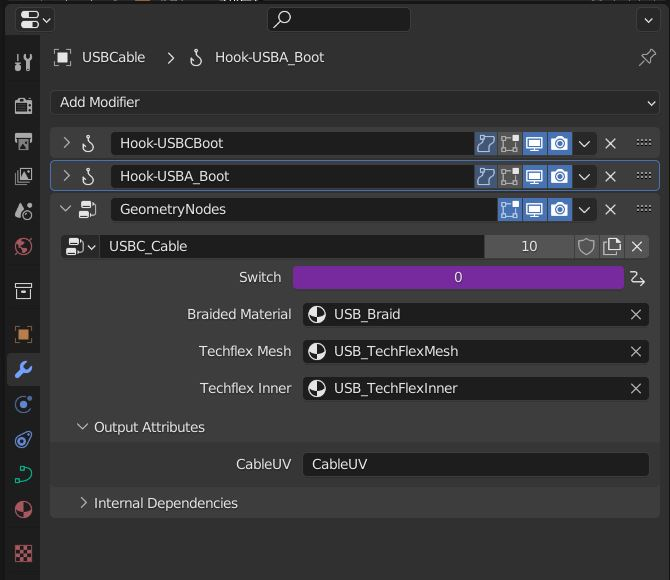
Экспорт кабелей
Чтобы экспортировать кабель в другое ПО, учтите: у кабеля нет UV-развёртки, её нужно преобразовать из атрибута (attribute). Выделите объект кабеля (кривую), нажмите Ctrl+A и выберите Visual Geometry to Mesh (Преобразовать визуальную геометрию в меш).
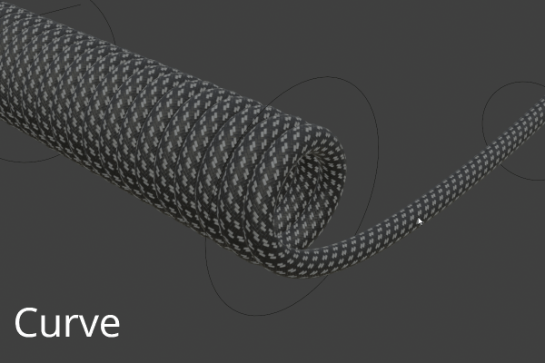
После этого в данных объекта появится атрибут; преобразовать его в UV-развёртку можно через выпадающее меню Attributes (Атрибуты) в свойствах данных объекта: задайте режим UV Map и подтвердите.
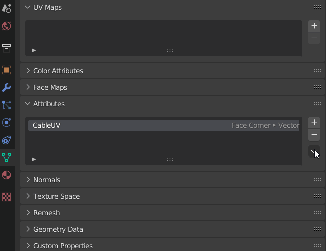
Теперь кабель можно экспортировать.